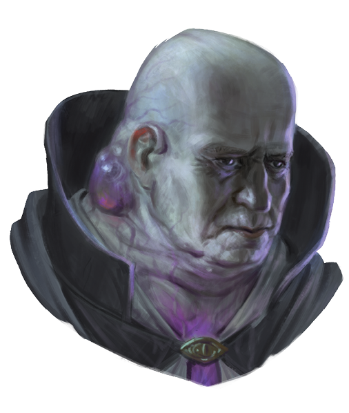
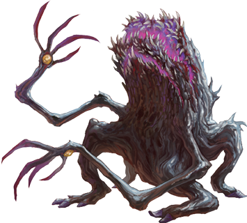
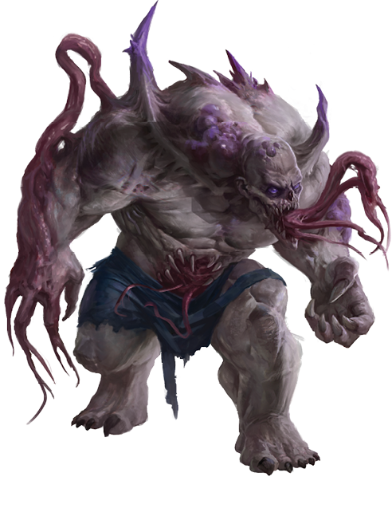
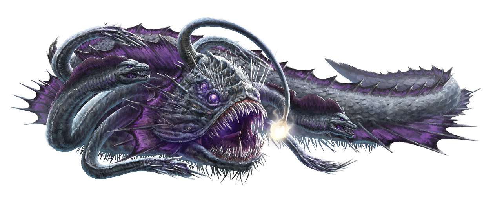
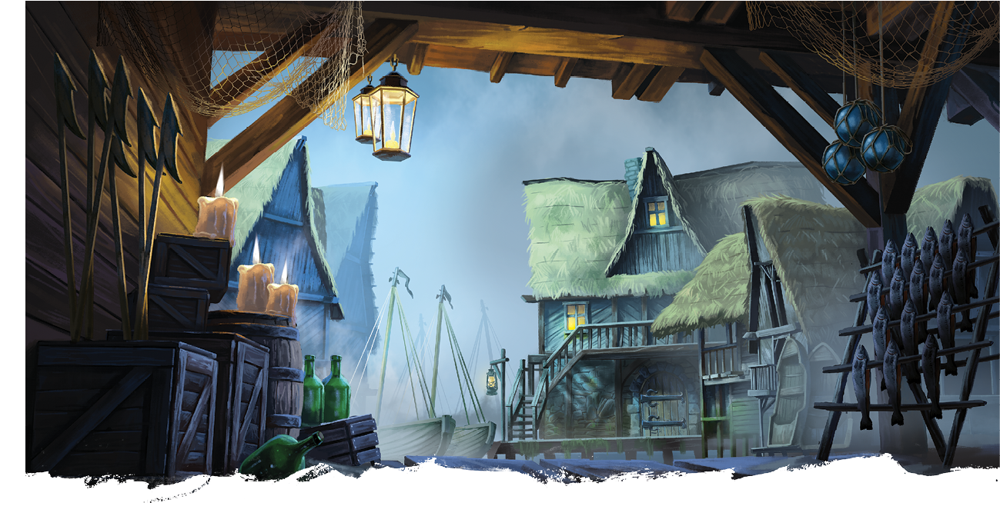
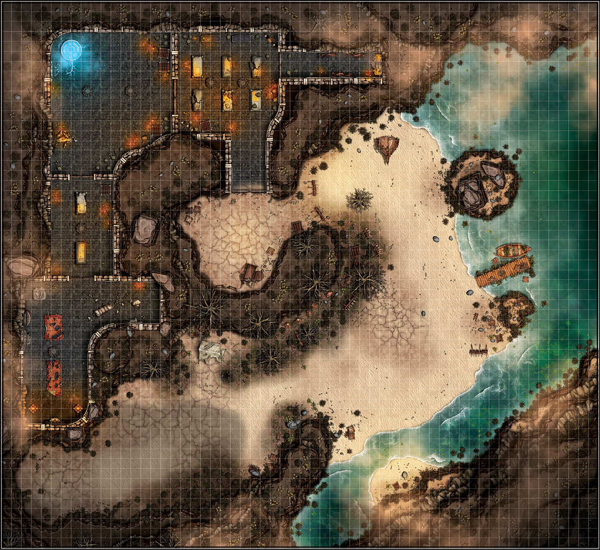

Welcome to the Documentation Hub
Both of these Adventure Modules plunge your party into multiple nightmare scenario's where malevolent monsters and telepathically controlled and mutated villagers clash in both a quiet farm setting, and small fishing town - both devastated by the mysterious and contaminating element known as Delerium. This comprehensive documentation will help you get the most out of your Foundry VTT module.
Current Version: 1.0.7 | Foundry Compatibility: v13+ | V12 Legacy Compatiblity Layer D&D 5e System: 5.0.3+
Quick Start Guide
Installation
- Open Foundry VTT and navigate to the setup page
- Click "Add-on Modules" → "Install Module"
- Search for "Sebastian Crowes Terror in Tierhaven" or "Sebastian Crowes Horror of Ash Bay"
- Click "Install" and wait for completion
- Enable the module in your world's module settings
First Time Setup
- Import the adventure from the compendium
- Review the Table of Contents journal entry
- Configure world time for daily monster spawning
- Set up player permissions for journal entries
- Test scene transitions and teleport zones
Module Features

📖 Complete Adventure Content
Featuring Gunther Hurlich and the corrupted inhabitants of Tierhaven
- Fully integrated storyline with branching paths
- Rich journal entries with responsive design
- Interactive table of contents navigation
- Comprehensive appendices and reference materials

"The Agogs emerge from the contaminated farms, their twisted forms a testament to Delerium's corrupting influence on both land and flesh."

🗺️ Terror in Tierhaven
Corrupted Locations:
- Tierhaven Overview: Explore the corrupted city
- Whittaker Farm: Investigate the mysterious farmstead
- Hurlich Farm: Multi-level location with basement and upper floors
- Horace's Hideout: Two-level dungeon with automated encounters

🌊 Horror of Ash Bay
Coastal Terror:
- Ashschaffen Village: Coastal town caught between political forces
- Salt Cove Shrine: Ancient temple now serving dark purposes
- The Lighthouse: Multi-level investigation location
- Empress Geraldine: Sunken ship with tragic secrets
- The Contaminated Reef: Underwater ecosystem corrupted by The Duchess


⚡ Advanced Automation
- Daily monster spawning system (1d4 Agogs/Allopines)
- Contamination mechanics and mutation tables
- Automated scene transitions and teleport zones
- Time-based event triggers
- "The Haze" Contamination Mechanic
- "The Lighthouse" Door Automation & Teleportation
👹 Custom Content
- Unique monsters with Drakkenheim abilities
- Custom NPCs with full stat blocks
- Special items and contaminated equipment
- Faction-specific content and rewards
- Contamination Mechanics increasing difficulty (The Haze, Contamination Effects)

Support Resources
Community Support
- Discord: Contact Ghostfire Tyler (teekz1763)
- Official Site: Ghostfire Gaming
- Bug Reports: Contact Page
- FoundryVTT: Modules
Quick Troubleshooting
Common issues and quick fixes:
- Module not appearing: Check Foundry v13+ compatibility
- Broken formatting: Clear browser cache (Ctrl+F5)
- Monsters not spawning: Enable world time tracking
- Missing images: Check internet connection for GitHub assets
For detailed solutions, visit our Troubleshooting Guide.
System Requirements
| Component | Minimum | Recommended |
|---|---|---|
| Foundry VTT | Version 13 | Latest Stable |
| D&D 5e System | 5.0.0 | 5.0.3+ |
| Browser | Chrome 90+ / Firefox 88+ | Latest Chrome/Firefox |
| RAM | 4GB | 8GB+ |
| Internet | Required for GitHub assets | Stable broadband |
Recent Updates
Version 1.0.7 - Latest Release
- Reduced module size through asset optimization
- Improved compression for faster loading
- Removed unused files for cleaner installation
- Updated cover and icon images with GitHub repository links
Version 1.0.6
- Fixed Roll Table entries for Version 12 compatibility
- Re-enabled module protection
- Performance improvements